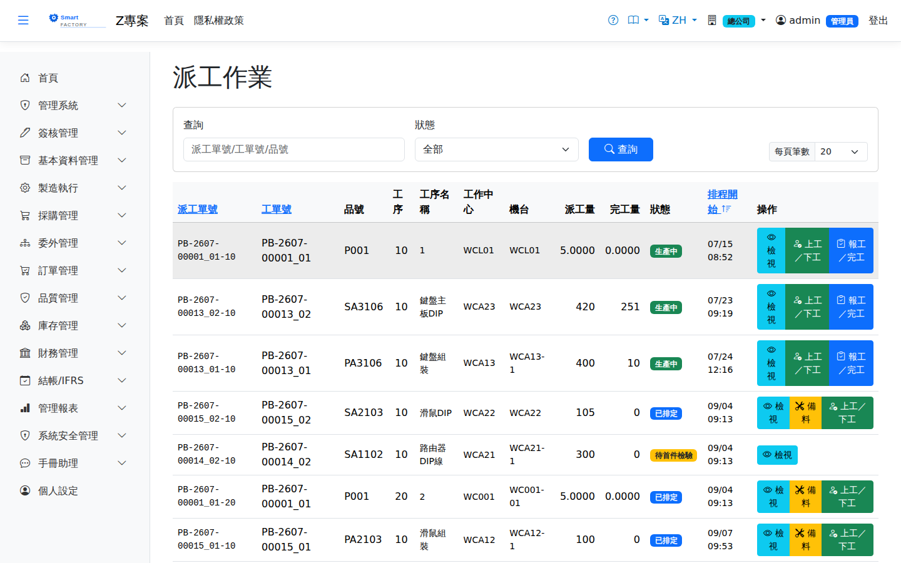

派工單是工序層級的執行單據（一道工序可拆多張派工到不同機台）。本畫面管理派工的開工/報工/完工：報工輸入良品/不良品數與工時，系統即時累計 QtyDone、計算實際人工與製費（工時 × 工作中心費率），不良品需選擇不良原因代碼。派工因機台停用或檢驗不合格而暫停時，也在這裡恢復、換機續做或結案剩餘量。亦支援行動裝置掃碼報工。A dispatch is the execution document at operation level (one operation can be split across several dispatches on different machines). This screen manages starting, reporting and completing a dispatch: reporting takes the good and defective quantities and the hours, and the system accumulates QtyDone in real time and works out actual labour and overhead (hours × work center rate); defective pieces need a defect reason code. When a dispatch is put on hold because its machine went down or an inspection failed, it is also resumed, switched to another machine or closed here. Reporting by barcode from a mobile device is also supported.

派工作業畫面截圖（示意，實際欄位/資料依權限與查詢條件而異）Dispatch screenshot (illustrative; actual fields and data vary by permission and query criteria)
查詢Search
1查詢列輸入條件後點「查詢」；欄位標題可點擊排序，清單下方有分頁導航。Enter your criteria on the query bar and click "Search"; column headers can be clicked to sort, and the paging controls sit below the list.
2查詢欄可輸入派工單號、工單號或品號，並可依狀態篩選。未選狀態時不列「已取消」的派工（工單作廢、或暫停後未產出即結案者）；要看這些請在狀態選「已取消」。The search box matches the dispatch number, work order number or item, and you can filter by status. Without a status filter, cancelled dispatches (from a voided work order, or closed while on hold with nothing produced) are left out; select "Cancelled" in the status filter to see them.
若本廠開啟「派工前自動重排排程」，打開時排程已過時會先自動重排，約數秒後才顯示，看到的就是最新的派工順序與機台（見If the plant has "Reschedule automatically before dispatch" turned on and the schedule is out of date when you search, it is re-run first and the list appears a few seconds later with the latest order and machines (see 自動重排排程Automatic rescheduling）。).
作業流程Process
備料Staging
1點「備料」開啟側欄，畫面列出本派工Click "Staging" to open the panel, which lists this dispatch's 尚未備妥的用料Material not yet ready與已開立的備料單狀態。 and the status of any staging slip already raised.
2點「Click " 建立備料單Create Staging Order」由本派工未發料用料開出草稿備料單（備料倉預設取自工作中心設定）；確認鎖料與揀料移入備料倉在 " creates a draft staging order from the material on this dispatch that has not been issued (the staging warehouse defaults to the work center setting); locking the stock on confirmation and picking it into the staging warehouse are done on the 備料單Material Staging畫面完成。 screen.
3機台準備（換模、換線）另按「開始備料 / 備料完成」計時。Machine setup (tooling or line changeover) is timed separately with "Start setup" and "Setup done". 模具不需回報No tooling to report——沿用排程時指定的模具。工序未設定準備工時者顯示「免機台準備」，可直接開工。 — the tooling assigned during scheduling is used. Operations with no setup time defined show "no machine setup" and can start straight away.
開工、報工與完工Starting, reporting and finishing
1選擇派工單點「開工」（記錄開始時間；生產線可多人同時開工）。工單須為「已投產」或「生產中」才能開工：仍在送審中、簽核被駁回，或已撤回回到「已規劃」的工單都無法開工。工序若設定Select a dispatch and click "Start" (the start time is recorded; on a production line several people can start at once). The work order must be Released or In production: a work order still awaiting approval, rejected, or withdrawn back to Planned cannot be started. If the operation has 需首件檢查（FPI）First-piece inspection (FPI) required，未通過前無法開工——備料完成後派工會停在「待首件」，須先由品管於, and work cannot start until it passes — once staging is done the dispatch stops at "awaiting first piece", and QC first has to 檢驗單Inspection Order的「FPI 待檢登錄」（或手機首件量測）判定通過才解鎖。 "FPI pending registration" (or the first-piece measurement on mobile) has to be passed before it is unlocked. 直接開工也擋得住work started directly is still blocked：閘口看的是「有沒有通過的首件檢驗單」，不是派工目前狀態，所以跳過備料無法繞過。: the gate looks at whether a passing first-piece inspection exists, not at the dispatch's current status, so skipping the staging step does not get round it.
2生產過程可During production you can 多次報工multiple production reports（例如每完成一批轉移就回報一次）：輸入良品數、不良品數與不良原因。報工後 (for example once per transfer batch): enter the good quantity, the defective quantity and the defect reason. After reporting, 人仍在線上繼續生產people stay online and keep producing。
3本次作業結束時點「At the end of the session, " 完工（結束本次上工）Complete (End This Session)」：可一併回報最後一批數量（不填則為純下工），系統關閉本次上工並結算人工／製造費用。 ": you can report the final quantity at the same time (leave it blank to just clock out); the system closes the session and settles the labour and overhead cost.
4尚未生產完可再次開工，形成下一輪「開工 → 報工 → 完工」循環；If production is not finished you can start again, going round the "start → report → finish" cycle once more; 累計良品數達派工量時派工自動結案The dispatch closes automatically when the cumulative good quantity reaches the dispatched quantity。生產線多人時各自完工、各報各的量，最後一人完工且數量達標才結案。. On a production line each operator completes and reports their own quantity; the dispatch is closed only when the last person finishes and the quantity target has been met.
5最末工序完工且需 FQC 者，由品保建立檢驗單。When the last operation is finished and FQC is required, QA creates the inspection document.
已開啟「製造簡化模式」的工廠：Plants with "Simplified Manufacturing Mode" switched on:派工不需要先排程，狀態停在「待排程」也能直接開工，
清單與手機待辦都會顯示這些派工。相對地，報工時系統會檢查 A dispatch does not have to be scheduled first — work can start even while it is still "To be scheduled",
and such dispatches appear both in the list and in the mobile to-do list. In return, when production is reported the system checks 本工序累計完成量不得超過前一工序The cumulative quantity completed at an operation cannot exceed that of the previous one
（第一道工序不受限），因為少了排程就沒有東西保證前工序先做。此設定由系統管理員於(the first operation is exempt), because without a schedule there is nothing to guarantee that earlier operations are done first. The setting is maintained by the system administrator under
系統參數System Parameters 開關，未開啟時上述兩點都不適用。switch; with it off, neither of the two points above applies.
拆分派工Split dispatch
1產量需分機台生產時，在When the quantity has to be produced on more than one machine, use the dispatch panel on 生產排程Production Schedule的派工側欄「拆分」，輸入各份數量與機台，系統建立子派工單（序號續編）。只有待排或已排的派工可以拆分。 and click "Split", entering the quantity and machine for each part; the system creates child dispatches with continued sequence numbers. Only pending or scheduled dispatches can be split.
暫停處理Handling a dispatch on hold
派工在下列情況會自動轉為「暫停」，狀態旁會標示原因：A dispatch goes on hold automatically in the cases below, and the reason is shown next to its status:
| 暫停原因Hold reason | 何時發生When it happens | 如何解除How it is released |
|---|
| 機台停用Machine down | 機台轉為故障、保養、外修等不可生產狀態（含模具打次到期自動轉保養）。該機台上準備中、準備完成、待首件與生產中的派工一律暫停；只是已排還沒開始的則退回待排，等重新排程。The machine moves to a status where it cannot run, such as breakdown, maintenance or external repair (including the automatic maintenance when tooling reaches its shot limit). Dispatches on that machine that are in setup, ready, pending FPI or in progress all go on hold; dispatches that were only scheduled and not started return to pending and wait to be rescheduled. | 機台恢復正常或待機時自動恢復；急件可改用「換機續做」。They resume automatically when the machine is back to available or standby; for urgent work use "Switch machine". |
| 首件檢查不合格First-piece inspection failed | 首件（FPI）判定不合格。The first-piece inspection (FPI) fails. | 重新調機後由品管恢復，派工回到「待首件」重新量測。After the machine is re-adjusted, QC resumes it and the dispatch returns to "Pending FPI" to be measured again. |
| 巡檢不合格In-process inspection failed | 生產中的派工製程巡檢（IPQC）判定不合格。An in-process inspection (IPQC) of a running dispatch fails. | 品管確認後恢復，回到生產中。QC confirms and resumes it, and it goes back to in progress. |
暫停的派工不參與排程重排，仍保留在原機台上。點清單上的「A dispatch on hold is not moved by rescheduling and stays on its machine. Click "暫停處理Handle hold」開啟側欄，有三種處理方式：" in the list to open the panel, which offers three ways to deal with it:
1恢復Resume：回到暫停前的狀態，在原機台繼續（首件不合格者回到「待首件」）。原機台仍停用時不能恢復。因品質不合格而暫停的，須由具「檢驗單」更新權限的人員恢復。: the dispatch returns to its status before the hold and continues on the same machine (one held for a failed first piece returns to "Pending FPI"). It cannot resume while the machine is still down. A dispatch held for a quality failure can only be resumed by someone with update permission on inspection orders.
2換機續做Switch machine：選一台可生產的機台（同工作中心的排在前面，也可跨工作中心）。尚未產出的整張派工改到新機台；已有產出的，原派工以已完成量完工，剩餘量另開一張續做派工（單號為原單號加 -s 序號）。續做的派工回到「待排」，要重新換模與首件檢查，: pick a machine that can run (machines in the same work center are listed first, and other work centers are allowed). If nothing has been produced, the whole dispatch moves to the new machine; if some has, the original dispatch completes at the quantity done and the remainder goes to a new continuation dispatch (numbered as the original plus -s and a sequence). The continuation returns to "Pending" and needs a new setup and first-piece inspection; 重新排程時只會排在選定的機台rescheduling keeps it on the selected machine。原機台上沒按下工的上工紀錄會一併結束，工時照實入帳。. Any session left open on the old machine is closed at the same time and its hours are booked as worked.
3剩餘量結案Close remaining quantity：剩餘量不再生產。已有產出的以已完成量完工；沒有產出的轉為「已取消」。此動作無法復原。: the remaining quantity will not be produced. If some has been produced the dispatch completes at that quantity; if nothing has, it becomes "Cancelled". This cannot be undone.
工單何時自動完工：When a work order completes automatically:工單的派工全部為「完工」或「已取消」（且至少一張完工）時，工單才自動轉完工。 A work order completes automatically only when all its dispatches are "Closed" or "Cancelled" (with at least one closed). 暫停的派工不算完成A dispatch on hold does not count as finished——剩餘量要恢復生產，或以「剩餘量結案」明確結束。 — its remaining quantity has to be resumed or explicitly closed with "Close remaining quantity".
列印Printing
清單每列的 按鈕（需有列印權限）在新分頁開啟含 QR Code 的列印單，可直接列印或另存 PDF。派工單列印含工單、工序、產品品名、工作中心與機台名稱、派工數量與排程時間，並附用料明細（品號、品名、需求量、已發量），可隨料送到現場。The button on each row of the list (print permission required) opens a printout with a QR code in a new tab, ready to print or save as PDF. The dispatch printout shows the work order, operation, product name, work center and machine names, dispatch quantity and scheduled times, plus the materials list (product code and name, required and issued quantities) to travel with the material to the floor.
欄位說明Field reference
查詢條件Query criteria
| 條件Condition | 說明Guide |
|---|
| 查詢Search | 派工單號、工單號或品號的模糊比對Partial match on the dispatch number, work order number or item |
| 狀態Status | 依派工單狀態篩選（待開工／進行中／已完工等）Filters by dispatch status (not started / in progress / completed …) |
清單欄位List columns
| 欄位Field | 說明Guide |
|---|
| 派工單號Dispatch No | 系統採番，不可修改Numbered by the system; not editable |
| 工單號 / 品號WO No. / Product | 本次派工所屬的工單與生產品號The work order and produced item this dispatch belongs to |
| 工序 / 工序名稱Operation / Operation name | 派工對應的途程工序序號與名稱Routing operation sequence and name the dispatch belongs to |
| 工作中心 / 機台Work center / Machine | 實際執行的工作中心與機台Work center and machine that actually did the work |
| 派工量Dispatched qty | 本張派工單指派的加工數量Quantity assigned to this dispatch |
| 完工量Completed qty | 已回報的累計完工數量；達到派工量後該派工單完工。累計合格數不能超過派工量，除非廠別設了「廠內超量容許率」；再超過時依「廠內超過容許上限時」拒收（預設），或只讓具「超量核准」權限的主管報（見廠別管理）。多做的量請在最後一次報工一起報。Cumulative quantity reported as complete; the dispatch finishes once it reaches the dispatched quantity. The cumulative good quantity cannot exceed the dispatch quantity unless the plant sets an "In-plant over-production tolerance"; beyond that, "In-plant: beyond the tolerance" rejects it (the default) or lets only a supervisor with the over-quantity approval right report it (see Plants). Report any extra quantity together with the last report. |
| 狀態Status | 派工單的執行進度；暫停時旁邊標示暫停原因Progress of the dispatch; when it is on hold, the reason is shown next to it |
| 排程開始Sched. Start | 排程計算出的預計開工時間Estimated start time from the scheduler |
上工／整備欄位Start-work / setup fields
| 欄位Field | 說明Guide |
|---|
| 機台代碼Machine | 本次上工使用的機台；同一生產線可多人同時上工Machine used for this session; several people can be on the same line at once |
| 模具代碼Tooling | 本次使用的模具；系統據此累計模具打次並在達門檻時觸發保養Tooling used this time; the system counts the shots against it and triggers maintenance when the threshold is reached |
報工欄位Production report fields
| 欄位Field | 說明Guide |
|---|
| 目前操作員Operator | 本次報工歸屬的上工紀錄（Session），決定工時歸屬The session this production report belongs to, which decides where the hours are charged |
| 合格數量Qty OK | 本次回報的良品數，累加至完工量Good pieces reported this time; they are added to the completed quantity |
| 不良數量Qty NG | 本次回報的不良品數，不計入完工量Defective pieces reported this time; they do not count towards the completed quantity |
| 不良原因Defect reason | 不良數量大於 0 時必填，供不良率分析與品質追溯Required when the defect quantity is greater than 0, for defect rate analysis and quality traceability |
| 容器代碼Container | 完工品裝載的容器，供後段工序接續與現場追蹤；從容器主檔選取，預設帶出該工序的完工容器，可改選或留空Container the finished pieces are loaded into, for the next operation and shop-floor tracking; picked from the Container Master, prefilled with the operation's output container, and may be left blank |
| 箱號Box No. | 選填。掃箱子上的 QR 碼，合格數就記在這個箱子上（容器種類以箱子為準）；下一道工序整箱接手時掃同一個箱號。箱子裝著別張工單的在製品或庫存批號時，整筆報工會被擋下Optional. Scan the QR code on a box and the good quantity is recorded on that box (the container type follows the box); when the next operation takes over the whole box, it scans the same box number. If the box already holds some other work order's work in process, or an inventory lot, the whole report is rejected |
完工入庫Production Putaway、不良率報表Defect rate report、檢驗單查詢Inspection Orders、備料單Material Staging、發退料單Material Slips
準備工時成本：Setup time cost:備料（機台準備）的實際工時由系統依起訖時間自動計算，不需人工填寫。
人工成本 The actual hours for staging (machine setup) are calculated by the system from the start and end times and do not have to be entered.
Labour cost 逐人per person計（備料人員與生產人員可能不是同一人，各自的工時分別入帳）；
製造費用依「最早開始備料 → 備料完成」的時間窗 is counted per person (the person who sets up and the person who produces may not be the same, and their hours are booked separately);
overhead is settled over the window from the earliest setup start to setup completion 只結算一次settled only once，不隨備料人數疊加。, and it does not multiply with the number of people doing the setup.
注意：Note:IPQC 巡檢不合格會自動暫停生產中的派工（見 A failed IPQC inspection automatically puts a running dispatch on hold (see 暫停處理Handling a dispatch on hold）；FQC 為完工入庫的硬性閘口。); FQC is a hard gate on completion into stock.
模具保養：Tooling maintenance:派工引用的模具若累計打次達保養門檻，清單狀態欄與報工面板會標示「模具需保養」；跨越門檻的那次報工會自動建立機台保養停機單（機台轉保養中、該機台上已開始的派工暫停）。保養完成後由工程師建立 HO 事件（來源單號填模具代碼）恢復機台並將打次歸零，因機台停用而暫停的派工隨之自動恢復。 If the tooling used by a dispatch reaches its maintenance threshold in accumulated shots, the status column in the list and the reporting panel show "tooling needs maintenance"; the production report that crosses the threshold automatically creates a machine maintenance downtime document (the machine goes into maintenance and the dispatches already started on it go on hold). Once the maintenance is done an engineer creates an HO event (with the tooling code as the source document number) to bring the machine back and reset the shot count to zero, and the dispatches held because the machine was down resume automatically.